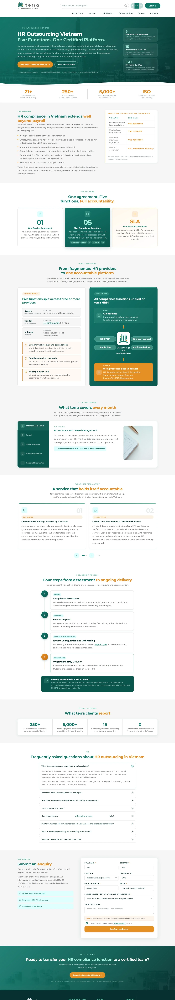
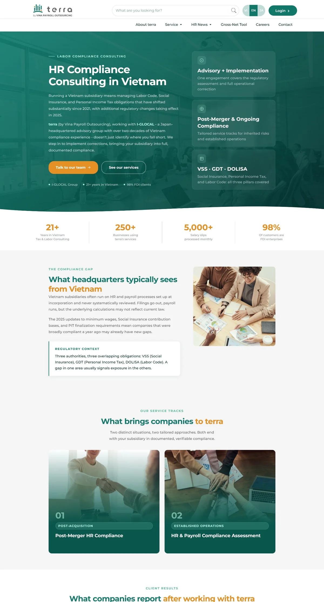
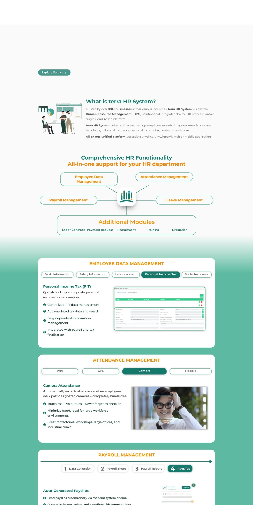
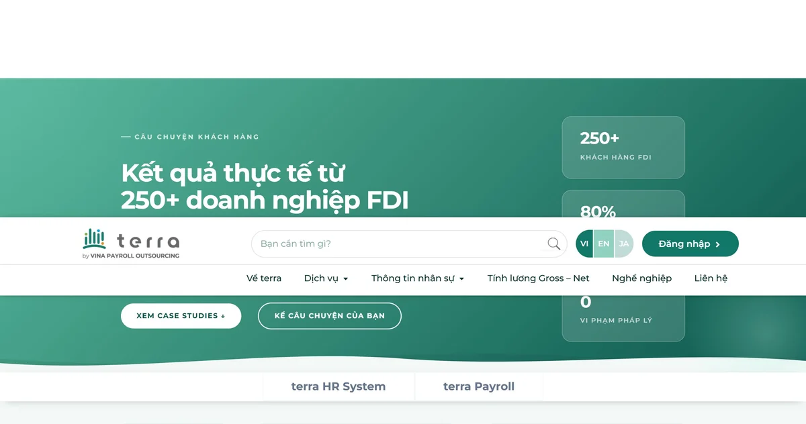

Full-stack digital marketing for a B2B payroll & HR SaaS platform — from website architecture and technical SEO to analytics infrastructure, content strategy, and AI-driven workflows.
terra serves FDI companies and mid-to-large enterprises operating in Vietnam — primarily HR managers, CFOs, and business owners who need compliant payroll outsourcing, HR consulting, and accounting services.
The B2B buyer journey is long, research-heavy, and multilingual (Vietnamese + English for Japanese/European decision-makers). Content needs to earn trust before it earns leads.
My scope covered everything technical and creative: the website, SEO, analytics, ads monitoring, social assets, video production, and branding materials — while collaborating with the manager on strategy direction and the content strategist on editorial calendar.
This wasn't a single-channel role. Over 18 months I touched every layer of the digital stack — from crawl infrastructure to creative production. Here's what I built and owned.
Each page was built end-to-end — keyword strategy, copy, Elementor layout, on-page SEO, and technical implementation. These are live production pages, not mockups.




All data pulled from Google Search Console (Sep 2024 – Apr 2026) and Semrush. Traffic is predominantly organic — paid ads were monitored but not the primary growth driver.
Worth being explicit — because the numbers tell two different stories depending on how you read them. The growth came from a deliberate dual-funnel architecture, not a single optimisation win.
Utility traffic is not vanity traffic — it's infrastructure. This is a deliberate compounding strategy: Layer 1 builds the domain's authority ceiling, Layer 2 converts that authority into qualified reach for B2B decision-makers.
AI tools weren't a shortcut — they were a production layer that let me operate at a breadth that would otherwise require a larger team. The key principle: AI accelerates output volume; human judgment maintains quality.
The biggest lesson from terra: technical health is not a one-time fix — it's a continuous discipline. The 55→90 health score improvement happened over months of iterative auditing, not a single sprint. The sites that compound are the ones that get incrementally cleaner every week.
The dual-funnel strategy was also a lesson in playing the long game. Early months felt slow — utility pages drove traffic but no obvious commercial signal. Trusting the compounding logic required holding conviction against the instinct to chase short-term conversions. By month 8, the domain authority built by informational content was visibly lifting the service pages in rankings.
Working as the sole technical and creative operator in a small team taught me to ruthlessly prioritise. Not every page needs to be perfect on launch — a published, indexable page with good fundamentals outperforms a perfect page that ships three months late. Ship, measure, iterate.
Finally: AI didn't make me faster at writing — it made me faster at thinking. The real productivity gain wasn't in generating text. It was in using AI to rapidly test angles, surface gaps, and structure thinking before committing to production.